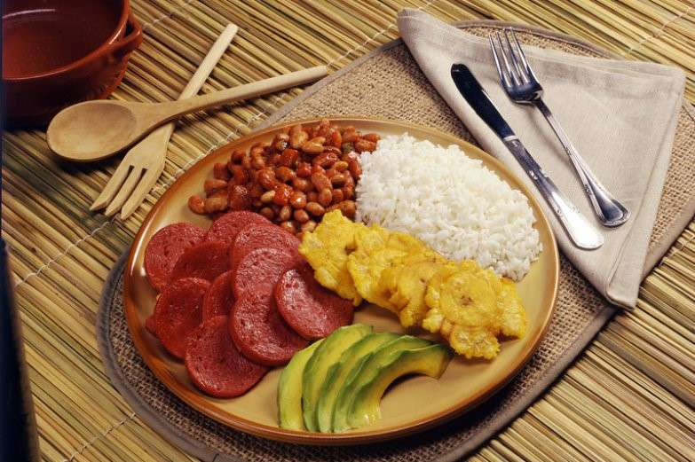

____
Традиционная еда
Санкочо (Sancocho) — Эта чрезвычайно густая похлебка состоит в основном из мяса, курицы или рыбы. Обязательный ингредиент санкочо - кусочки молодого початка кукурузы.
Ля бандера (La Bandera) — В переводе на русский язык название этого блюда обозначает "флаг". Блюдо довольно простое, и состоит из красной фасоли, риса и мяса (цвета доминиканского флага) с добавлением жареных бананов и овощей. Доминиканцы едят его на обед и на ужин. Как правило, La Bandera подается вместе с салатом или с хрустящими жареными бананами.

Мофонго (Mofongo) — Настоящее мофонго состоит из нескольких слоев, переложенных листьями. В каждом слое присутствуют разные ингредиенты. Обычно это жареное банановое пюре, бекон или другие сорта мяса.
Камаронес ал ахийо (Camarones al ajillo) — креветки с чесноком;
____